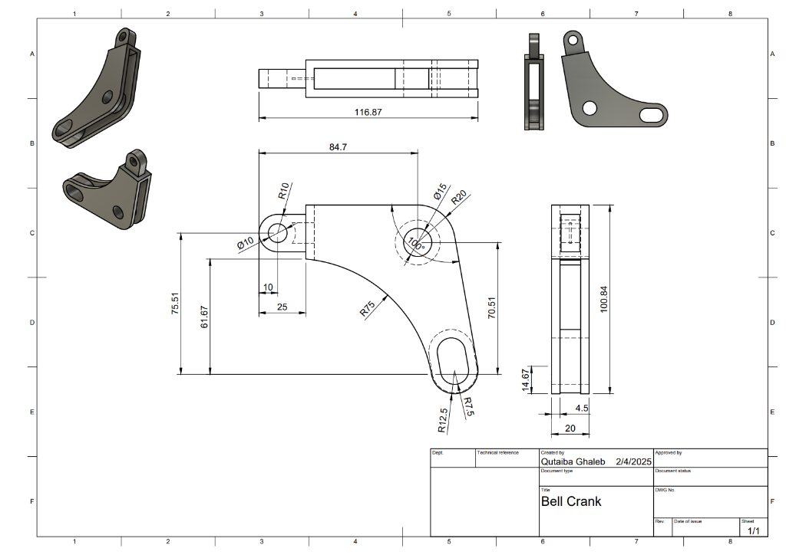

The Design Process
Industrial design sits between engineering and aesthetics — a model that satisfies structural requirements but looks wrong will fail in the market. This work used Fusion 360's CAID (Computer-Aided Industrial Design) toolset to iterate forms rapidly and validate color, material, and finish choices before any physical prototyping.
Methodology
T-Spline surface modeling
Complex organic shapes that parametric solid modeling can't produce cleanly were built using T-Splines — subdivision surface modeling that allows freeform sculpting while maintaining manufacturability constraints.
Photorealistic rendering for CMF validation
Fusion 360's ray-traced renderer with material libraries was used to validate Color/Material/Finish decisions before physical samples were ordered — catching aesthetic mismatches without spending on prototypes.
Bell Crank Mechanism — Spec Sheet
A Bell Crank designed for 90° motion transfer. Fabrication drawing generated directly from the parametric model with GD&T annotations.
